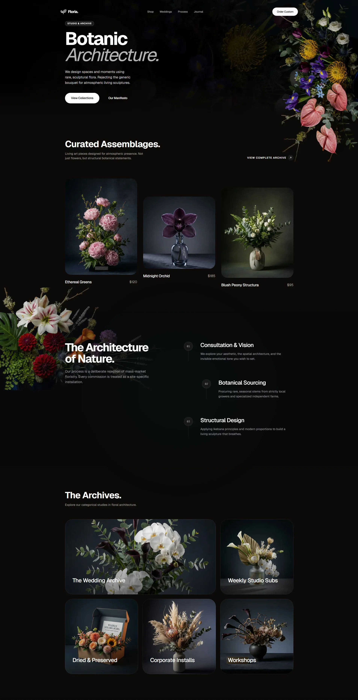

taste-skill
A design skill that gives your AI coding agent good taste - it stops building generic, boring-looking interfaces.
Install taste-skill and the websites, apps and dashboards your AI agent builds look designed - with real visual hierarchy, spacing and motion, not the usual flat gray default.

How does it work?
Your AI coding agent builds working interfaces, but they all look the same - flat, gray, generic. They work, but nobody would call them well-designed.
You ask Claude Code to build a landing page and get a technically correct page with default fonts, no visual hierarchy and the same layout every AI produces.
You install taste-skill and it guides your AI agent's design decisions automatically.
Install the skill once, and every UI your agent builds benefits from design guidance - no extra prompting needed.
Your usual request to the AI agent - build a page, design a dashboard, create a form - but now with design guidance applied.
The same prompt you always use: 'Build a landing page for a coffee shop.' The skill adds design taste to the output.
It loads design principles into the agent's context, guiding choices about layout, typography, color, spacing and motion.
- The skill loads with adjustable dials: DESIGN_VARIANCE (how bold), MOTION_INTENSITY (how much animation), VISUAL_DENSITY (how packed)
- It guides the agent's choices: typography pairings, color palettes, spacing scales, visual hierarchy and layout structure
- The agent applies these principles to whatever it builds - pages, dashboards, forms, components
The README's Floria example: instead of a generic plant shop page, the agent builds a page with 'Botanic Architecture' branding, warm earth tones, product cards at real prices, and a polished process section.
UIs that look designed, not generated - with real visual hierarchy, spacing and polish.
- Designed interfacesA landing page with thoughtful typography, color and layout - not the flat gray default
- Tunable outputDial DESIGN_VARIANCE up for bold, creative layouts or down for conservative, corporate ones
What changes for me?
Without it
- Every AI-built interface looks the same: default fonts, flat gray palette, no visual hierarchy. They work, but they look like AI made them.
- Getting better design from an AI agent means writing long, detailed design prompts every time.
With it
- Install once and every UI the agent builds gets design guidance - real typography, color, spacing and hierarchy.
- Tune the output with three dials: how bold, how animated, how dense. No design prompts needed.
How hard is it to try?
Effort
- Install taste-skill in your AI coding agent (Claude Code, Codex, Cursor or others): follow the instructions at tasteskill.dev.
- Ask your agent to build a landing page for a fictional business (like 'a specialty coffee roaster called Evergreen'). Look at the typography, colors and layout.
- Try adjusting the DESIGN_VARIANCE dial (in the skill's settings) from low to high and rebuild the same page to see the difference.
What it takes on your computer
- Space on disk
- No data found for exact install size. It is a skill (a set of design guidelines loaded into the agent's context), not a standalone application.
- Memory while it runs
- No data found. Runs as a skill inside your AI coding agent.
- Runs on
- Works with Claude Code, Codex, Cursor and other AI coding agents. No specific hardware requirements.
Paste this into Claude Code. It runs your safety scan first, then a 10-minute test.
/skillspector https://github.com/Leonxlnx/taste-skill If that scan passes: install taste-skill, build a landing page for a fictional coffee roaster, then adjust DESIGN_VARIANCE from low to high and rebuild to see the difference. 10 minutes max.
Should I?
Great if you...
- You use an AI coding agent to build UIs and want them to look designed, not generated - with real typography, color and hierarchy
- You are not a designer and want one-click design improvement without learning design principles yourself
Skip it if...
- You are a professional designer who sets your own design system - a generic taste skill may conflict with your brand guidelines
- You only build backend code or APIs - taste-skill helps with visual interfaces, not server logic
Instead, you could look at
- impeccableAnother design skill for AI agents. Different design philosophy - impeccable focuses on 'design sense' while taste-skill focuses on 'good taste.'
- ui-ux-pro-maxA design playbook for AI agents focused on professional web and mobile screens. More structured and rule-based than taste-skill.
Is it safe?
- Security advisories: 0GitHub's advisory list, checked Oct 10
- Searches for CVEs, vulnerabilities, malware and scams5 results read, including the national CVE database: nothing found
- Are the stars earned?94.2K stars, 8 contributors, 175 commits
Watch out for
- By Leon Lin, a solo developer. 175 commits, MIT license. The skill is small and focused, but maintenance depends on one person.
- Works with multiple agents, not just Claude Code. taste-skill supports Codex, Cursor and other AI coding agents. Your mileage may vary by agent.
- Design is subjective. The 'taste' this skill teaches is one person's design philosophy. It improves generic output significantly, but may not match your brand or aesthetic.
- Already on the Category Radar. taste-skill has been in our Design and Branding lane since October 2. It earned this feature through sustained growth, not a spike.
Who's using it, and for what?
taste-skill has 94K stars and is on the skills.sh trending list. Individual named uses are hard to find - adoption shows in the AI-built sites and apps that look noticeably better.
We couldn't find anyone describing real use of it yet. That's normal for a brand-new repo, and it's worth knowing.
Who's talking about it
- skills.shLeonxlnx/taste-skill on skills.sh
- findarepoLeonxlnx/taste-skill on findarepo
- tasteskill.devtaste-skill website with examples